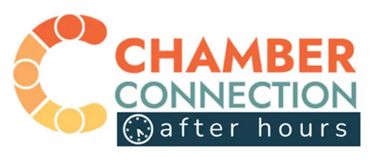
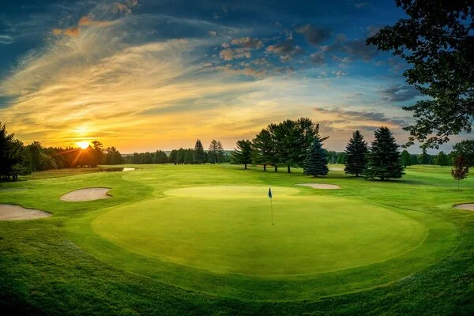
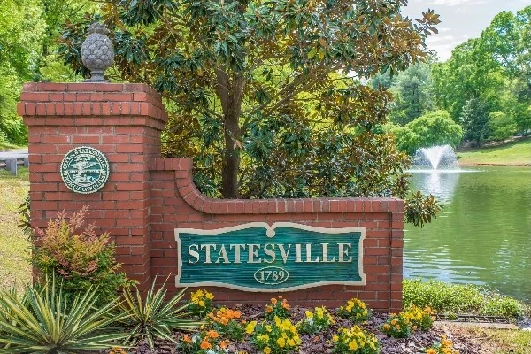
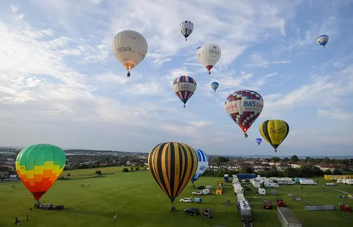
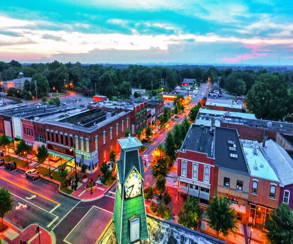

Welcome To The Beautiful City Of Statesville

Welcome to Statesville, NC, a vibrant community nestled in the heart of North Carolina. With a population of 27.8k, our city boasts a diverse and thriving population, with 94.5% proudly calling themselves citizens.
In recent years, Statesville has experienced steady growth, drawing individuals and families alike, thanks in part to our strategic location near the bustling metropolis of Charlotte. Situated at the crossroads of two of the busiest highways, I-40 and I-77, our city enjoys unparalleled connectivity, making us a hub of activity and attention.
Come discover Statesville, where opportunity meets community, and where the spirit of progress and possibility thrives!
Description
Welcome to Business After Hours, our flagship networking event tailored for business professionals like you. This exclusive gathering offers a unique platform to exchange ideas, discover local businesses, and cultivate valuable relationships. Set in a relaxed environment, this event is designed to enrich both you and your company through expanded contacts and resources. Attendance is complimentary with your Chamber membership.
The event is the 4th Thursday of the month and is hosted by our members.
Statesville Civic Center
Welcome to our Civic Center, your premier destination for hosting a diverse range of events tailored to your every need. Whether you're planning a professional business gathering or a cherished personal celebration, our versatile venue offers the perfect space and amenities to bring your event to life.
Historic Fort Dobbs
Fort Dobbs was the only permanent frontier provincial fort in the colony of North Carolina. Construction began in late 1755 and was completed one year later. It served as the military headquarters for the frontier company (approximately fifty men) as well as a safe-haven for settlers.
Relaxing Hobbies
Discover the charm of Statesville, where lush green fairways beckon amidst a backdrop of scenic beauty. With a plethora of premier golf courses, our city is not only a golfer's paradise but also a hub for thriving business gatherings and charitable endeavors. These meticulously manicured courses serve as more than just venues for tee-offs; they are the dynamic epicenters where business connections flourish and philanthropic efforts thrive.
Beautiful Parks
These parks here in statesville serve as prime locations for public events and gatherings, where our community spirit shines brightly for all to see. Our vibrant parks serve as bustling hubs of community activity, drawing people from all walks of life to enjoy the outdoors.
Great Events
Prepare to be uplifted by one of Statesville's most anticipated events of the year: our spectacular Balloon Festival. Each year, our town becomes a beacon of excitement as people from far and wide flock to witness the mesmerizing sight of colorful hot air balloons painting the sky. It's a celebration that unites our community and welcomes visitors with open arms, offering an unforgettable experience for all who attend.
Great Night Life
Experience Statesville's vibrant nightlife, where our diverse restaurants draw crowds from near and far. Many of these establishments are Chamber of Commerce members, offering not just exceptional dining but also networking opportunities. Feel free to leave your business cards at these hotspots, where connections thrive and opportunities await. Come, savor the flavors of our city and discover why our nightlife is second to none.